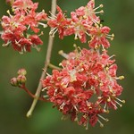

A History of Henna
Henna or heena is a vegetable dye derived from the plant lawsonia inermis.

It’s been used for thousands of years by people from North Africa, the Middle East and South Asia for ritual and therapeutic uses.
There are two kinds of dye treatments that use the henna plant: red and black. They both derive from the same plant, except to make it black, coal tar is added. These darkening agents are unsafe and we do not offer black henna.
Henna is a natural staining agent. To make the dye, the henna plant is concentrated. Its red berries are pressed and blended with the roots, flowers, and essential oils to form an aromatic paste.
Once the paste is applied, you must wait for it to dry. The longer it remains in contact with your skin, the darker the color. We’ll show you how to care for your henna art.